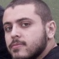

O Evento
Um evento dinâmico de tecnologia!
13 palestras com média de 15 minutos cada! Uma cadeia frenética de talks, abordando novas tecnologias, linguagens de programação, técnicas de projeto, vulnerabilidades e vários outros temas.
Entrada Gratuita, basta registrar o RG, para os não moradores do CTA.
Quer entender melhor? Confira os vídeos da primeira edição no youtube do SJC HackerClube!
Agenda
- "Classic Games with Python in the browser"
- "Clonando a API do Facebook"
- "A cobra vai fumar (e tomar um golinho de café): Jython"
- "Menos Overengineering: Notepad++"
- "Como ficar milionário em jogos flash"
- "Box2d: Física aplicada em games"
- "Design de Software: Uma variável a ser tratada"
- "Como ser mais eficiente usando bash"
- "Sistemas Distribuídos usando o Kademlia"
- "Projeto de Sistema de Controle de Voo Não-Linear para um Helicóptero Autônomo"
- "SQL Injection for Dummies"
- "Torturando números para que confessem o sumiço das cervejas"
- "graoJS: A full stack MVC NodeJS framework"
Palestrantes
Fernando Masanori: Docente da FATEC São José dos Campos, adora dar aulas, graduado em Computação pelo IME-USP, mestrado pelo ITA. Desenvolveu projetos para a Cobra Tecnologia, Credicard Mastercard, PriceWaterhouse&Coopers e Itaú Bankboston. Interesses: Python, Data Warehouse, NoSQL, Pentaho, Google Technology, Facebook.
Renzo Nuccitelli: Engenheiro de Computação formado pelo ITA, Instrutor Python Pro, especialista em Google App Engine, usa Python desde 2009. Adora dar aulas, palestrar e participar de eventos da comunidade; conhecer novas pessoas e novas ideias.
Giovane Liberato: Trabalha na startup de educação QMágico, é entusiasta em segurança da informação, apaixonado por programação e pythonista recem convertido. As vezes toca violão.

Márcio Ramos (Cubo): Organizador dos SJC Lightning Talks. Aluno do terceiro ano de engenharia de computação no ITA, curte muito aprender novas linguagens de programação, mas sempre mantem uma paixão especial pelo python.
Rodrigo Roim: Jogador assíduo de jogos casuais. Também desenvolveu alguns jogos em flash (pouco mais de 3M gameplays) e odeias as pessoas que fazem o que ele vai ensinar nesse Lightning Talk.
 Felipe Tasca: Entusiasta de programação de sistemas e games. Programa a 5 anos profissionalmente. Formado em Análise e Desenvolvimento de Sistemas pelo IBTA.
João Vitor Lessa: Estudante de Análise e Desenvolvimento de Sistemas e Estagiário na empresa IMAGEM. Amante de Design, certificações e novas tecnologias.
Alexandre Muzio: Aluno do 1.o ano do ITA, fazendo engenharia da computação. Gosto muito de programar, jogar videogame e assistir séries.

Dalton Pinto: Engenheiro da Computação formado pelo ITA em 2011, ex-membro da RedeCASD, empreendedor na RedeAlumni e desenvolvedor de soluções em inteligência artificial pela Expertte.

Thiago Cardoso: Graduando em Engenharia Eletrônica pelo ITA em 2013. Trabalhou num projeto de piloto automático para helicópteros de pequeno porte no CESAR.
Henrique Lima: Analista de Entrega de Serviço na Pilkington Brasil e Pesquisador em Segurança da Informação.
Mauro Assis: Engenheiro agrícola há 25 anos Universidade Federal de Viçosa, com MBA em Gestão de Projetos da FGV. Desenvolvedor de software e projetos de automação.
Marcelo Fleury: Artesão de software, apaixonado por segurança da informação, agilidade e software livre.
Inscrições
Para participar basta se cadastrar neste form ou no botão "Se Inscreva" no topo.
O evento é gratuito, mas agradecemos doações ao SJC HackerClube, através do botão "doar" na nossa página
Local
O evento acontece no Instituto Tecnológico de Aeronáutica (Auditório B do prédio ELE/COMP).
Contato
email de contato: contato@sjclightning.com.br